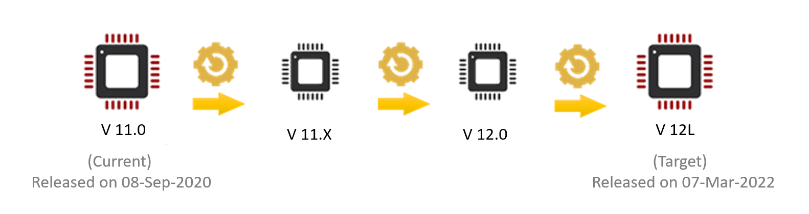

Knox E-FOTA
Last updated January 25th, 2024
Knox E-FOTA enables enterprise IT admins to remotely deploy OS versions and security updates to corporate devices without requiring user interaction.
Test updates before deployment to verify compatibility between in-house apps and new OS versions, all while increasing the security of enterprise devices by ensuring the latest security patches are deployed on a schedule.
Audience
This document is intended for:
- System Security Architects. Understand how Knox E-FOTA works, and how you can use it to update large fleets of enterprise devices.
- IT Admins. Learn how you can push and manage over-the-air firmware updates for enterprise devices.
Try the solution
Streamline your mobile update workflow using Knox E-FOTA. Enable version control management, and schedule OS updates to occur outside business hours and avoid business disruptions.
About Knox E-FOTA
Knox E-FOTA is an enterprise solution that controls OS versions on Samsung Knox mobile devices to maximize cost efficiency. It lets you:
- Ensure the latest security patches are deployed to devices on schedule.
- Test updates prior to real-world deployment, ensuring compatibility between in-house apps and new OS versions.
Key Features
- Forced updates. Simplify device management by deploying forced updates so that all devices have the same OS version. You can push updates without requiring user interaction.
- Selective OS version. Ensure operational continuity by controlling which OS version to deploy to your devices, since the latest OS version might not always be compatible with your in-house apps. You can pin them to that version until you’re ready to deploy the latest OS version.
- Scheduled updates. Minimize business interruptions by scheduling firmware updates to occur outside business hours.
For a full list of all features, visit the product page for Knox E-FOTA.
Benefits
- Software compatibility testing. Enforce updates only after the software is tested to ensure compatibility between internal apps and new OS versions. This helps minimize the need for IT support for compatibility issues.
- Device security. Deploy the latest verified firmware along with the latest security patches … also called Security Maintenance Releases … to all enrolled devices immediately without requiring user interaction.
- Efficient rollout. Maintain productivity by specifying a time when devices download and install updates to minimize business interruptions. You can stagger the deployment of updates (for example, by region) to ensure operational continuity.
- Efficient device management. Remotely deploy forced updates to ensure all enterprise devices are always running the latest validated OS version. Having a uniform view of all devices allows you to manage them more efficiently. Silent updates don’t require user interaction, so they can’t be postponed or rejected.
How does Knox E-FOTA work?
Firmware-over-the-air (FOTA) is a service that allows you to efficiently and securely push firmware updates to a fleet of enterprise mobile devices. Typically, the latest firmware updates are pushed to devices by their service provider through a Samsung business-to-consumer (B2C) FOTA server. The problem with this is that the latest firmware isn’t always compatible with a company’s in-house apps.
Without Knox E-FOTA, companies can only address this problem by:
- Always updating to the latest OS version, or
- Blocking all OS updates using their EMM
Knox E-FOTA allows admins to select a firmware version to deploy, even if it’s not the latest version. Devices are then locked to that version. When admins have performed compatibility testing on a later firmware version, they can then update devices to the tested version.
Additionally, with Knox E-FOTA, businesses push firmware updates from a Samsung business-to-business (B2B) FOTA server. There are exceptions, such as AT&T and Verizon, who provide firmware updates from their own servers and not through Knox E-FOTA. The B2B FOTA server then syncs the device information with the B2C FOTA server.
Downloading firmware versions
Knox E-FOTA gives you access to a list of official firmware released via the general Samsung FOTA service within the last 12 months. An additional firmware list could be provided following an extra consultation.
When pushing a firmware update, Samsung generates a delta file or a change file for updating from the current firmware version to a target version. This is then released via the general Samsung FOTA server and delivered to enterprise devices over-the-air.
Firmware files are available from the Knox E-FOTA server for an average of 12 months.

In some cases, especially when upgrading the target devices to a major Android version, you may be required to download several intermediate firmware to reach the target firmware version. The required delta files are sequentially installed automatically. Regardless of which Knox E-FOTA edition you’re using, this will result in the target devices rebooting multiple times.
On this page
Is this page helpful?